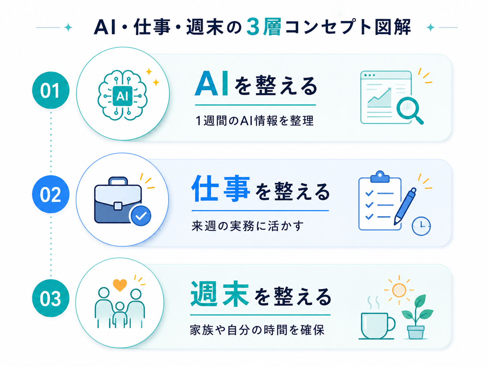
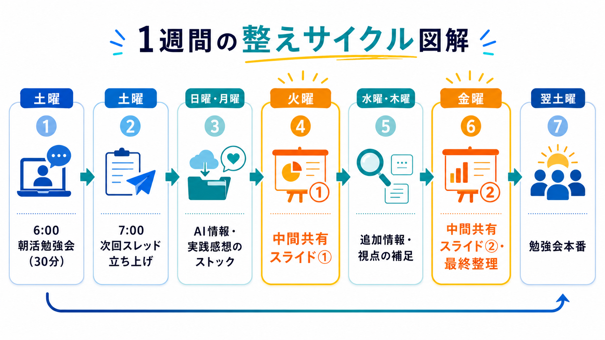
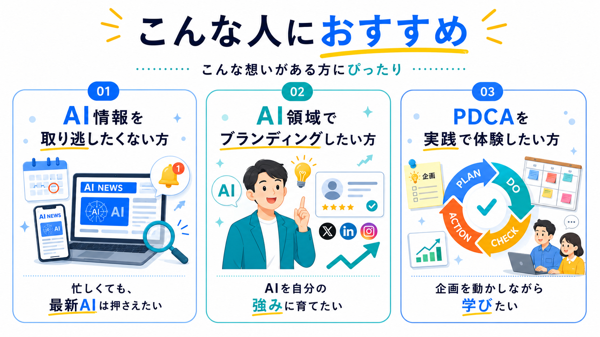
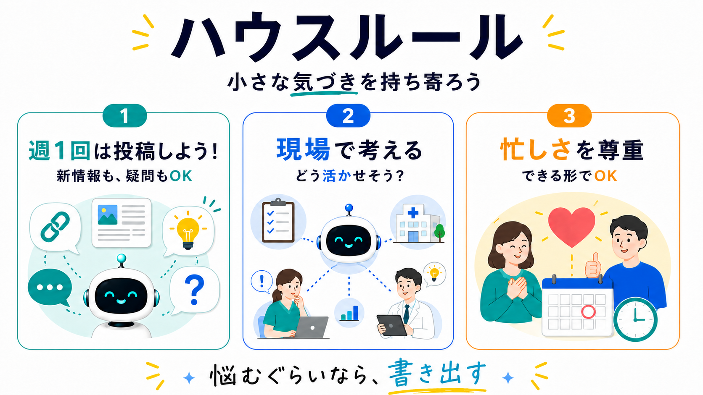

🗂️
火曜・金曜の
中間共有
週前半・週後半のAI情報を、重要トピックに絞って共有します。
1週間のAI情報と実践知を、土曜朝6時に整理する朝活コミュニティ。
生成AIのニュースやアップデートは、毎日のように流れてきます。でも、すべてを一人で追い続ける必要はありません。土曜朝の勉強会とPodcastで、忙しい人でも無理なくAI情報をキャッチアップできます。週の途中の情報収集・共有には、コメキャリメンバーとして参加できます。
朝活への参加は無料です。週の途中の情報収集・共有に関わるには、コメキャリへの参加が必要です。
PARTICIPATION BENEFITS
週の途中で整理し、土曜朝に理解を深め、あとから資料やPodcastで復習できる仕組みにしています。受け取れるのは次の3つです。
週前半・週後半のAI情報を、重要トピックに絞って共有します。
紹介した情報の出典や参考リンクを整理してお渡しします。
参加できなかった週も、あとから音声でキャッチアップできます。
CONCEPT
週末のAI整え習慣は、単なるAIニュース共有会ではありません。1週間で流れてきた生成AIのニュース・アップデート・活用事例・実践知を整理し、来週の仕事にどう活かすかまで考える朝活コミュニティです。
そして、この企画で整えるのはAI情報だけではありません。平日の忙しさで後回しになった学び。金曜夜に流されて失う土曜の朝。家族や自分のために使いたい週末の日中。来週の仕事に向けた小さな準備。
AIに振り回されるのではなく、自分のペースで学び、使い、暮らしに取り入れていく。それが、週末のAI整え習慣です。

CHECK
そんな人のために、週の途中で情報を整理し、土曜朝に学び、Podcastで後から復習できる仕組みをつくりました。
WEEKLY CYCLE
週末のAI整え習慣は、土曜朝の勉強会だけで完結する企画ではありません。日々流れてくるAI情報を、週の途中で整理し、土曜朝に実務へ落とし込む、1週間の学習サイクルとして運用します。
1週間のAI情報を整理し、来週の仕事に活かす視点を共有。
Slack「生成AI活用部屋」でスレッドを立ち上げ。リアクション／返信で参加表明できます。
気になったニュース、試したこと、実践メモを共有。
週前半の重要トピックを整理し、短時間で把握できる形に。
メンバーの視点や新しい情報を加えてブラッシュアップ。
土曜朝に向けて、週後半の情報と重要ポイントを整理。
1週間の流れをまとめ、実務への落とし込みまで。
火曜・金曜の中間共有があるから、週末に一気に追い込まなくても大丈夫。少しずつ整えて、土曜朝に理解を深める流れをつくっています。
※週の途中の情報収集・共有は、コメキャリメンバー向けの活動です。

WHY 6 AM
土曜朝6時という時間は、ただ早く勉強するための時間ではありません。
金曜夜に流されすぎず、週末の朝を前向きに始めるため。朝のうちに学びを終えて、日中を家族や自分のために使うため。平日に忙しくても、週末の最初に自分の学びを取り戻すため。
主催者自身も、平日は仕事や別の活動が重なり、保育園に通う息子とゆっくり過ごす時間を十分に取れない日があります。だからこそ、土曜の朝に学びを置き、AI情報を整え、週末のスタートを整える。
週末のAI整え習慣は、AIを学ぶためだけの場ではありません。仕事も、学びも、家族との時間も大切にしたい人が、自分の時間を取り戻すための週末習慣です。
VOICES
毎回の朝活後にアンケートをとり、内容と進め方を毎週見直しています。ここに出ているのは、その回答をそのまま匿名で掲載したものです。
第2回〜第11回の参加後アンケート（回答92件）より。運営メンバーの回答を含みます。
HOW TO JOIN
土曜朝の勉強会は、申込ページから無料で参加できます。火曜・金曜の中間共有など、週の途中の活動に関わるにはコメキャリへの参加が必要です。
申込ページから登録します。1分ほどで完了します。
毎週土曜朝6時から30分。オンラインで参加できます。
週の途中の情報収集・共有に関わりたい方向けです。
RECOMMENDED FOR

週末は忙しくてAI情報を取り逃しがち。それでも、最新のニュースやアップデートはしっかり押さえておきたい方。
自分自身がAI関連の発信・ブランディングをしていきたい方。学びをそのまま発信や仕事に活かせます。
企画を動かしながらPDCAを回す過程を体験したい方。コミュニティ運営の実践をリアルに体感できます。
HOUSE RULES
週末のAI整え習慣は、AIに関する小さな気づきや疑問を持ち寄り、土曜朝の学びにつなげるコミュニティです。新情報や便利ツールだけでなく、「これってどう使えばいい？」「この場合どう考える？」という相談も歓迎します。

AIに関する情報・疑問・試したこと・困ったことを、週1回は共有してみましょう。URLやスクリーンショットだけでもOKですが、何が気になったのか／何を共有したいのか／何を聞きたいのかを一言添えてください。
「自分の職場なら？」「今の活動なら？」「発信や資料作成に使うなら？」と、一度自分のユースケースに引き寄せて考えてみましょう。必ず投稿に書く必要はありません。
全員が忙しい前提で、できる時に、できる形で関わりましょう。反応が遅くても、長文でなくても大丈夫です。
悩むぐらいなら、書き出す。
完璧な情報より、小さな気づきを歓迎します。
MESSAGE
AIの進化は速く、情報を追うだけでも大変な時代になりました。でも、本当に大切なのは、AIに詳しくなることだけではありません。学んだことを、自分の仕事や暮らしにどう活かすか。そして、忙しい毎日の中で、自分や家族との時間をどう守るか。
週末のAI整え習慣は、そんな問いから生まれました。平日は仕事や別の活動が重なり、子どもとの時間を十分に取れない日もあります。だからこそ、週末の日中は大切な人との時間に使いたい。
土曜朝に学びを置くことで、AI情報を整え、週末のスタートを整え、日中の時間を取り戻す。この場が、AI時代に自分の働き方と暮らし方を整えるきっかけになれば嬉しいです。
主催 神藤 俊希
EVENT INFO
朝の30分で、1週間のAI情報を整理し、来週の仕事に活かすヒントを持ち帰る。週末の日中を大切に使いたい人のための、コメキャリ内の朝活コミュニティです。
FAQ
土曜朝の勉強会は「無料で次回の朝活に申し込む」から登録してください。週の途中のAI情報収集・共有に関わる場合は、コメキャリへの参加後、Slack「生成AI活用部屋」で活動します。
はい。専門知識がなくても参加できます。1週間のAI情報を実務目線で整理して共有するため、AIに詳しくない方でも無理なくキャッチアップできます。
はい。過去回はPodcastバックナンバーとして視聴できるため、後から学ぶことができます。
AI情報を一人で追い続けなくても大丈夫。週の途中で整理し、土曜朝に学び、Podcastで後から復習する。来週の仕事と、週末の時間を整える朝活をはじめてみませんか？